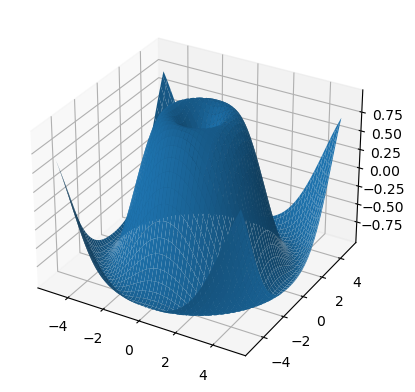

import torch
import numpy as npPytorch Basics
Pytorch Basics
torch.cuda.is_available()TrueData Types
float_tensor = torch.ones(1, dtype=torch.float)
float_tensor.dtypetorch.float32double_tensor = torch.ones(1, dtype=torch.double)
double_tensor.dtypetorch.float64complex_float_tensor = torch.ones(1, dtype=torch.complex64)
complex_float_tensor.dtypetorch.complex64complex_double_tensor = torch.ones(1, dtype=torch.complex128)
complex_double_tensor.dtypetorch.complex128int_tensor = torch.ones(1, dtype=torch.int)
int_tensor.dtypetorch.int32long_tensor = torch.ones(1, dtype=torch.long)
long_tensor.dtypetorch.int64uint_tensor = torch.ones(1, dtype=torch.uint8)
uint_tensor.dtypetorch.uint8double_tensor = torch.ones(1, dtype=torch.double)
double_tensor.dtypetorch.float64bool_tensor = torch.ones(1, dtype=torch.bool)
bool_tensor.dtypetorch.boolCreation Operations
torch.is_tensor
x = torch.tensor([1, 2, 3])
x, torch.is_tensor(x)(tensor([1, 2, 3]), True)torch.set_default_device
torch.tensor([1.2, 3]).devicedevice(type='cpu')torch.set_default_device('cuda') # current device is 0
torch.tensor([1.2, 3]).devicedevice(type='cuda', index=0)torch.set_default_device('cpu')
a = torch.arange(1000000)
atensor([ 0, 1, 2, ..., 999997, 999998, 999999])a + 1CPU times: user 20.7 ms, sys: 25.4 ms, total: 46.1 ms
Wall time: 7.37 mstensor([ 1, 2, 3, ..., 999998, 999999, 1000000])torch.set_default_device('cuda')
a = torch.arange(1000000)
atensor([ 0, 1, 2, ..., 999997, 999998, 999999], device='cuda:0')a + 1CPU times: user 6.29 ms, sys: 0 ns, total: 6.29 ms
Wall time: 912 µstensor([ 1, 2, 3, ..., 999998, 999999, 1000000],
device='cuda:0')torch.get_default_dtype
torch.get_default_dtype() # initial default for floating point is torch.float32torch.float32torch.set_default_dtype(torch.float64)
torch.get_default_dtype() # default is now changed to torch.float64torch.float64torch.set_printoptions
# Limit the precision of elements
torch.set_printoptions(precision=2)
torch.tensor([1.12345])tensor([1.12], device='cuda:0')# Limit the number of elements shown
torch.set_printoptions(threshold=5)
torch.arange(10)tensor([0, 1, 2, ..., 7, 8, 9], device='cuda:0')# Restore defaults
torch.set_printoptions(profile='default')
torch.tensor([1.12345])tensor([1.1235], device='cuda:0')torch.set_default_device('cpu')
torch.arange(10)tensor([0, 1, 2, 3, 4, 5, 6, 7, 8, 9])torch.as_tensor
a = np.array([1, 2, 3])
t = torch.as_tensor(a)
ttensor([1, 2, 3])t[0] = -1
aarray([-1, 2, 3])a = np.array([1, 2, 3])
t = torch.as_tensor(a, device=torch.device('cuda'))
ttensor([1, 2, 3], device='cuda:0')t[0] = -1
aarray([1, 2, 3])ttensor([-1, 2, 3], device='cuda:0')torch.zeros
torch.empty((2,2))tensor([[1.3554e-20, 3.0851e-41],
[1.3552e-20, 3.0851e-41]])torch.zeros(2, 3)tensor([[0., 0., 0.],
[0., 0., 0.]])torch.zeros(5)tensor([0., 0., 0., 0., 0.])torch.ones(2, 3)tensor([[1., 1., 1.],
[1., 1., 1.]])torch.ones(5)tensor([1., 1., 1., 1., 1.])torch.range
torch.arange(5), torch.arange(1, 4), torch.arange(1, 2.5, 0.5)(tensor([0, 1, 2, 3, 4]), tensor([1, 2, 3]), tensor([1.0000, 1.5000, 2.0000]))torch.linspace(3, 10, steps=5),\
torch.linspace(-10, 10, steps=5),\
torch.linspace(start=-10, end=10, steps=5),\
torch.linspace(start=-10, end=10, steps=1)(tensor([ 3.0000, 4.7500, 6.5000, 8.2500, 10.0000]),
tensor([-10., -5., 0., 5., 10.]),
tensor([-10., -5., 0., 5., 10.]),
tensor([-10.]))torch.logspace(start=-10, end=10, steps=5),\
torch.logspace(start=0.1, end=1.0, steps=5),\
torch.logspace(start=0.1, end=1.0, steps=1),\
torch.logspace(start=2, end=2, steps=1, base=2)(tensor([1.0000e-10, 1.0000e-05, 1.0000e+00, 1.0000e+05, 1.0000e+10]),
tensor([ 1.2589, 2.1135, 3.5481, 5.9566, 10.0000]),
tensor([1.2589]),
tensor([4.]))torch.empty((2,3), dtype=torch.int64)tensor([[ 140634107035024, 140634107035024, 7454421801564381752],
[2322206376936961119, 7310597164893758754, 145]])torch.full((2, 3), 3.141592)tensor([[3.1416, 3.1416, 3.1416],
[3.1416, 3.1416, 3.1416]])torch.quantize_per_tensor
torch.set_default_dtype(torch.float32)torch.quantize_per_tensor(torch.tensor([-1.0, 0.0, 1.0, 2.0]), 0.1, 10, torch.quint8),\
torch.quantize_per_tensor(torch.tensor([-1.0, 0.0, 1.0, 2.0]), 0.1, 10, torch.quint8).int_repr(),\
torch.quantize_per_tensor(torch.tensor([-1.0, 0.0, 1.0, 2.0]), torch.tensor(0.1), torch.tensor(10), torch.quint8)(tensor([-1., 0., 1., 2.], size=(4,), dtype=torch.quint8,
quantization_scheme=torch.per_tensor_affine, scale=0.1, zero_point=10),
tensor([ 0, 10, 20, 30], dtype=torch.uint8),
tensor([-1., 0., 1., 2.], size=(4,), dtype=torch.quint8,
quantization_scheme=torch.per_tensor_affine, scale=0.10000000149011612,
zero_point=10))torch.complex
real = torch.tensor([1, 2], dtype=torch.float32)
imag = torch.tensor([3, 4], dtype=torch.float32)
z = torch.complex(real, imag)
z.dtypetorch.complex64real, imag, z(tensor([1., 2.]), tensor([3., 4.]), tensor([1.+3.j, 2.+4.j]))torch.polar
import numpy as np
abs = torch.tensor([1, 2], dtype=torch.float64)
angle = torch.tensor([np.pi / 2, 5 * np.pi / 4], dtype=torch.float64)
z = torch.polar(abs, angle)
ztensor([ 6.1232e-17+1.0000j, -1.4142e+00-1.4142j], dtype=torch.complex128)Indexing, Slicing, Joining, Mutating Ops
torch.cat
x = torch.randn(2, 3)
xtensor([[-0.1340, 0.5254, -0.3770],
[-2.0310, -0.8961, -0.6459]])torch.cat((x, x, x), 0)tensor([[-0.1340, 0.5254, -0.3770],
[-2.0310, -0.8961, -0.6459],
[-0.1340, 0.5254, -0.3770],
[-2.0310, -0.8961, -0.6459],
[-0.1340, 0.5254, -0.3770],
[-2.0310, -0.8961, -0.6459]])torch.cat((x, x), 1)tensor([[-0.1340, 0.5254, -0.3770, -0.1340, 0.5254, -0.3770],
[-2.0310, -0.8961, -0.6459, -2.0310, -0.8961, -0.6459]])torch.conj
x = torch.tensor([-1 + 1j, -2 + 2j, 3 - 3j])
x, x.is_conj()(tensor([-1.+1.j, -2.+2.j, 3.-3.j]), False)y = torch.conj(x)
y, y.is_conj()(tensor([-1.-1.j, -2.-2.j, 3.+3.j]), True)torch.permute
x = torch.randn(2, 3, 5)
x.size()torch.Size([2, 3, 5])torch.permute(x, (2, 0, 1)).size()torch.Size([5, 2, 3])torch.reshape
a = torch.arange(4.)
atensor([0., 1., 2., 3.])torch.reshape(a, (2, 2))tensor([[0., 1.],
[2., 3.]])b = torch.tensor([[0, 1], [2, 3]])
btensor([[0, 1],
[2, 3]])torch.reshape(b, (-1,))tensor([0, 1, 2, 3])torch.movedim
t = torch.randn(2,3,5)
t.size()torch.Size([2, 3, 5])torch.movedim(t, 1, 0).shapetorch.Size([3, 2, 5])torch.movedim(t, 1, 0)tensor([[[-1.0370, -0.2811, 0.2693, 0.5935, -0.1354],
[-2.7575, -2.4650, 0.8077, -0.2873, -1.2993]],
[[-0.6173, -0.0460, -0.6329, 1.0519, -0.1674],
[-0.8958, -0.2828, 1.2355, -1.1782, -1.3597]],
[[-2.0996, -0.6692, -0.7840, 0.1171, 0.0334],
[ 0.4422, 0.2438, 1.0947, -1.2390, -1.4378]]])torch.movedim(t, (1, 2), (0, 1)).shapetorch.Size([3, 5, 2])torch.split
a = torch.arange(10).reshape(5, 2)
atensor([[0, 1],
[2, 3],
[4, 5],
[6, 7],
[8, 9]])torch.split(a, 2)(tensor([[0, 1],
[2, 3]]),
tensor([[4, 5],
[6, 7]]),
tensor([[8, 9]]))torch.split(a, [1, 4])(tensor([[0, 1]]),
tensor([[2, 3],
[4, 5],
[6, 7],
[8, 9]]))torch.t
x = torch.randn(())
x, torch.t(x)(tensor(-0.6261), tensor(-0.6261))x = torch.randn(3)
x, torch.t(x)(tensor([-1.2207, -0.6549, -0.0028]), tensor([-1.2207, -0.6549, -0.0028]))x = torch.randn(2, 3)
x, torch.t(x)(tensor([[-2.0021, 1.3072, -0.9742],
[-1.8025, 0.5369, 0.2517]]),
tensor([[-2.0021, -1.8025],
[ 1.3072, 0.5369],
[-0.9742, 0.2517]]))Rand
torch.rand
torch.rand(4)tensor([0.7377, 0.8273, 0.2958, 0.8372])torch.rand(2, 3)tensor([[0.5028, 0.1841, 0.1133],
[0.4431, 0.0016, 0.8662]])torch.randint
torch.randint(3, 5, (3,))tensor([4, 3, 3])torch.randint(10, (2, 2))tensor([[5, 3],
[8, 1]])torch.randint(3, 10, (2, 2))tensor([[8, 3],
[8, 3]])torch.randn
torch.randn(4)tensor([0.2036, 0.3526, 0.7444, 1.0029])torch.randn(2, 3)tensor([[-0.3317, 3.1649, 2.7242],
[ 0.2243, 1.2105, 0.9819]])torch.normal
torch.normal(mean=torch.arange(1., 11.), std=torch.arange(1, 0, -0.1))tensor([ 0.3426, 0.6076, 3.0707, 3.1876, 5.1126, 6.5160, 6.9380, 8.2192,
8.9378, 10.0406])torch.normal(mean=0.5, std=torch.arange(1., 6.))tensor([1.4364, 1.6189, 0.1503, 2.7895, 3.0156])torch.normal(mean=torch.arange(1., 6.))tensor([0.8270, 0.5561, 2.5076, 2.7576, 2.9344])torch.normal(2, 3, size=(1, 4))tensor([[-1.9720, 2.4059, 3.3461, 0.6155]])Save and Load
# Save to file
import io
x = torch.tensor([0, 1, 2, 3, 4])
torch.save(x, 'Data/tensor.pt')
# Save to io.BytesIO buffer
buffer = io.BytesIO()
torch.save(x, buffer)torch.load('tensors.pt', weights_only=True)
torch.load('tensors.pt', map_location=torch.device('cpu'), weights_only=True)
torch.load('tensors.pt', map_location=lambda storage, loc: storage, weights_only=True)
torch.load('tensors.pt', map_location=lambda storage, loc: storage.cuda(1), weights_only=True)
torch.load('tensors.pt', map_location={'cuda:1': 'cuda:0'}, weights_only=True)
with open('tensor.pt', 'rb') as f:
buffer = io.BytesIO(f.read())
torch.load(buffer, weights_only=False)
torch.load('module.pt', encoding='ascii', weights_only=False)Parallelism
torch.get_num_threads()6torch.set_num_threads(12)torch.get_num_interop_threads()6torch.set_num_interop_threads(12)Locally disabling gradient computation
x = torch.zeros(1, requires_grad=True)
with torch.no_grad():
y = x * 2
y.requires_gradFalseis_train = False
with torch.set_grad_enabled(is_train):
y = x * 2
y.requires_gradFalsetorch.set_grad_enabled(True) # this can also be used as a function
y = x * 2
y.requires_gradTruetorch.set_grad_enabled(False)
y = x * 2
y.requires_gradFalseno_grad
x = torch.tensor([1.], requires_grad=True)
with torch.no_grad():
y = x * 2
y.requires_gradFalse@torch.no_grad()
def doubler(x):
return x * 2
z = doubler(x)
z.requires_gradFalse@torch.no_grad()
def tripler(x):
return x * 3
z = tripler(x)
z.requires_grad
# factory function exception
with torch.no_grad():
a = torch.nn.Parameter(torch.rand(10))
a.requires_gradTrueMath operations
torch.abs(torch.tensor([-1, -2, 3]))tensor([1, 2, 3])a = torch.randn(4)
atensor([ 0.1512, -0.5116, 1.4073, -0.9758])torch.add(a, 20)tensor([20.1512, 19.4884, 21.4073, 19.0242])b = torch.randn(4)
c = torch.randn(4, 1)
b,c, torch.add(b, c, alpha=10)(tensor([-0.5080, -0.2541, 0.7946, -0.7497]),
tensor([[ 0.3399],
[-0.8642],
[-1.4262],
[ 0.3894]]),
tensor([[ 2.8912, 3.1451, 4.1939, 2.6495],
[ -9.1502, -8.8963, -7.8475, -9.3918],
[-14.7701, -14.5162, -13.4674, -15.0117],
[ 3.3861, 3.6400, 4.6887, 3.1444]]))torch.asin(a)tensor([ 0.1518, -0.5370, nan, -1.3503])torch.bitwise_not(torch.tensor([-1, -2, 3], dtype=torch.int8))tensor([ 0, 1, -4], dtype=torch.int8)torch.ceil(a)tensor([1., -0., 2., -0.])torch.clamp(a, min=-0.5, max=0.5)tensor([ 0.1512, -0.5000, 0.5000, -0.5000])min = torch.linspace(-1, 1, steps=4)
min, torch.clamp(a, min=min)(tensor([-1.0000, -0.3333, 0.3333, 1.0000]),
tensor([ 0.1512, -0.3333, 1.4073, 1.0000]))Gradient
# Estimates the gradient of f(x)=x^2 at points [-2, -1, 2, 4]
coordinates = (torch.tensor([-2., -1., 1., 4.]),)
values = torch.tensor([4., 1., 1., 16.], )
torch.gradient(values, spacing = coordinates)(tensor([-3., -2., 2., 5.]),)# Estimates the gradient of the R^2 -> R function whose samples are
# described by the tensor t. Implicit coordinates are [0, 1] for the outermost
# dimension and [0, 1, 2, 3] for the innermost dimension, and function estimates
# partial derivative for both dimensions.
t = torch.tensor([[1, 2, 4, 8], [10, 20, 40, 80]])
torch.gradient(t)(tensor([[ 9., 18., 36., 72.],
[ 9., 18., 36., 72.]]),
tensor([[ 1.0000, 1.5000, 3.0000, 4.0000],
[10.0000, 15.0000, 30.0000, 40.0000]]))# A scalar value for spacing modifies the relationship between tensor indices
# and input coordinates by multiplying the indices to find the
# coordinates. For example, below the indices of the innermost
# 0, 1, 2, 3 translate to coordinates of [0, 2, 4, 6], and the indices of
# the outermost dimension 0, 1 translate to coordinates of [0, 2].
torch.gradient(t, spacing = 2.0) # dim = None (implicitly [0, 1])
# doubling the spacing between samples halves the estimated partial gradients.(tensor([[ 4.5000, 9.0000, 18.0000, 36.0000],
[ 4.5000, 9.0000, 18.0000, 36.0000]]),
tensor([[ 0.5000, 0.7500, 1.5000, 2.0000],
[ 5.0000, 7.5000, 15.0000, 20.0000]]))# Estimates only the partial derivative for dimension 1
torch.gradient(t, dim = 1) # spacing = None (implicitly 1.)(tensor([[ 1.0000, 1.5000, 3.0000, 4.0000],
[10.0000, 15.0000, 30.0000, 40.0000]]),)# When spacing is a list of scalars, the relationship between the tensor
# indices and input coordinates changes based on dimension.
# For example, below, the indices of the innermost dimension 0, 1, 2, 3 translate
# to coordinates of [0, 3, 6, 9], and the indices of the outermost dimension
# 0, 1 translate to coordinates of [0, 2].
torch.gradient(t, spacing = [3., 2.])(tensor([[ 3., 6., 12., 24.],
[ 3., 6., 12., 24.]]),
tensor([[ 0.5000, 0.7500, 1.5000, 2.0000],
[ 5.0000, 7.5000, 15.0000, 20.0000]]))# The following example is a replication of the previous one with explicit
# coordinates.
coords = (torch.tensor([0, 2]), torch.tensor([0, 3, 6, 9]))
torch.gradient(t, spacing = coords)(tensor([[ 4.5000, 9.0000, 18.0000, 36.0000],
[ 4.5000, 9.0000, 18.0000, 36.0000]]),
tensor([[ 0.3333, 0.5000, 1.0000, 1.3333],
[ 3.3333, 5.0000, 10.0000, 13.3333]]))Reduction Ops
a = torch.randn(4, 4)
atensor([[ 0.5653, -1.6250, -1.7234, 1.6898],
[ 0.0964, 0.4920, -0.8990, 0.2050],
[-0.0388, -0.3062, -2.7269, 2.2214],
[-0.4256, -1.3614, 1.6437, 1.3073]])torch.argmax(a), torch.argmin(a)(tensor(11), tensor(10))torch.argmax(a, dim=1), torch.argmin(a, dim=1)(tensor([3, 1, 3, 2]), tensor([2, 2, 2, 1]))torch.argmin(a, dim=1, keepdim=True)tensor([[2],
[2],
[2],
[1]])torch.amax(a, 0)tensor([0.5653, 0.4920, 1.6437, 2.2214])torch.amin(a, 0)tensor([-0.4256, -1.6250, -2.7269, 0.2050])Tests if all element in input evaluates to True.
torch.all(a)tensor(True)Tests if any element in input evaluates to True.
torch.any(a)tensor(True)x = torch.randn(4)
y = torch.randn(4)
x,y(tensor([-0.8039, -1.4679, 0.4484, -0.5348]),
tensor([-0.5979, -1.1656, -1.2298, -0.2573]))torch.dist(x, y, 3.5)tensor(1.6806)torch.dist(x, y, 3)tensor(1.6850)torch.dist(x, y, 0)tensor(4.)torch.dist(x, y, 2)tensor(1.7399)a = torch.randn(1, 3)
atensor([[-0.7396, -1.3435, 1.0013]])torch.mean(a)tensor(-0.3606)torch.prod(a)tensor(0.9949)a = torch.randn(4, 2)
atensor([[-0.0451, -0.4858],
[-0.1007, 0.4423],
[-0.2149, 0.4494],
[ 0.7059, 0.0417]])torch.prod(a, 1)tensor([ 0.0219, -0.0446, -0.0966, 0.0295])torch.std(a, dim=1, keepdim=True)tensor([[0.3116],
[0.3840],
[0.4697],
[0.4696]])torch.sum(a)tensor(0.7927)torch.sum(a, 0)tensor([0.3451, 0.4476])torch.var(a, dim=0, keepdim=True)tensor([[0.1756, 0.1951]])torch.var_mean(a, dim=0, keepdim=True)(tensor([[0.1756, 0.1951]]), tensor([[0.0863, 0.1119]]))Comparison Ops
torch.eq(torch.tensor([[1, 2], [3, 4]]), torch.tensor([[1, 1], [4, 4]]))tensor([[ True, False],
[False, True]])torch.allclose(torch.tensor([10000., 1e-07]), torch.tensor([10000.1, 1e-08]))Falsetorch.isnan(torch.tensor([1, float('nan'), 2]))tensor([False, True, False])Broadcast
x = torch.tensor([1, 2, 3])
torch.broadcast_to(x, (3, 3))tensor([[1, 2, 3],
[1, 2, 3],
[1, 2, 3]])torch.broadcast_shapes((2,), (3, 1), (1, 1, 1))torch.Size([1, 3, 2])x = torch.tensor([[0, 2], [1, 1], [2, 0]]).T
x
x, torch.cov(x)(tensor([[0, 1, 2],
[2, 1, 0]]),
tensor([[ 1., -1.],
[-1., 1.]]))Covolution
torch.cov(x, correction=0)tensor([[ 0.6667, -0.6667],
[-0.6667, 0.6667]])fw = torch.randint(1, 10, (3,))
aw = torch.rand(3)
fw, aw, torch.cov(x, fweights=fw, aweights=aw)(tensor([2, 2, 9]),
tensor([0.1281, 0.5609, 0.1982]),
tensor([[ 0.4583, -0.4583],
[-0.4583, 0.4583]]))Diagonal
a = torch.randn(3)
a, torch.diag(a)(tensor([-0.0159, -0.2550, -0.3652]),
tensor([[-0.0159, 0.0000, 0.0000],
[ 0.0000, -0.2550, 0.0000],
[ 0.0000, 0.0000, -0.3652]]))torch.diag(a, 1)tensor([[ 0.0000, -0.0159, 0.0000, 0.0000],
[ 0.0000, 0.0000, -0.2550, 0.0000],
[ 0.0000, 0.0000, 0.0000, -0.3652],
[ 0.0000, 0.0000, 0.0000, 0.0000]])a = torch.randn(3, 3)
atensor([[ 0.8558, -0.8227, 1.5082],
[-0.6674, -0.0815, -0.5271],
[-0.1011, -0.3513, 0.1919]])torch.diag(a, 0)tensor([ 0.8558, -0.0815, 0.1919])torch.diag(a, 1)tensor([-0.8227, -0.5271])Diff
a = torch.tensor([1, 3, 2])
a, torch.diff(a)(tensor([1, 3, 2]), tensor([ 2, -1]))torch.gradient(a)(tensor([ 2.0000, 0.5000, -1.0000]),)b = torch.tensor([4, 5])
torch.diff(a, append=b)tensor([ 2, -1, 2, 1])c = torch.tensor([[1, 2, 3], [3, 4, 5]])
ctensor([[1, 2, 3],
[3, 4, 5]])torch.diff(c, dim=0)tensor([[2, 2, 2]])torch.diff(c, dim=1)tensor([[1, 1],
[1, 1]])Einsum
# trace
torch.einsum('ii', torch.randn(4, 4))tensor(2.8873)# diagonal
torch.einsum('ii->i', torch.randn(4, 4))tensor([ 0.1727, -1.2934, 0.1134, 0.6699])# outer product
x = torch.randn(5)
y = torch.randn(4)
x,y(tensor([ 0.8261, 2.2608, 0.5666, -2.3195, -1.1706]),
tensor([-0.1575, 1.3682, -1.6248, -0.4177]))torch.einsum('i,j->ij', x, y)tensor([[-0.1301, 1.1302, -1.3423, -0.3451],
[-0.3561, 3.0932, -3.6735, -0.9444],
[-0.0892, 0.7751, -0.9206, -0.2367],
[ 0.3653, -3.1735, 3.7688, 0.9689],
[ 0.1844, -1.6016, 1.9021, 0.4890]])# batch matrix multiplication
As = torch.randn(3, 2, 5)
Bs = torch.randn(3, 5, 4)
As, Bs(tensor([[[ 1.7602, 1.3836, -0.8395, 1.2415, 0.2106],
[-1.0765, -1.6569, 1.0785, 2.6039, -0.2173]],
[[-0.3606, 0.7737, -0.3265, -0.3982, -0.1795],
[ 0.4787, 0.3987, 0.5030, 2.0617, -1.2417]],
[[ 1.2606, -1.7532, 1.2267, 0.2588, -0.6794],
[ 0.4158, 0.3457, -0.3235, -1.4921, -1.0168]]]),
tensor([[[-1.1582, -0.5702, -0.5820, 1.4487],
[ 1.6068, 0.6026, 1.4152, 0.7676],
[-1.3955, -0.1634, -0.9673, -1.1214],
[ 0.8568, -1.2561, -1.0304, 0.8901],
[ 0.1840, 0.1531, 1.4496, 1.6163]],
[[-0.0585, -0.2001, 0.1084, -0.9644],
[-0.6568, 1.1768, -1.4877, 0.0249],
[-0.1339, 0.2070, 1.4734, 0.0627],
[ 0.3322, 0.5430, -0.5031, 0.1328],
[ 0.0214, 1.1490, 0.4914, 0.2774]],
[[ 0.3791, 0.3227, -2.6659, 0.6282],
[ 1.6384, 0.2688, -2.1299, 1.0743],
[ 0.1086, -0.0778, -0.2566, 0.0419],
[ 0.0142, 1.9122, -1.7333, 1.9668],
[ 0.1300, 0.8281, -1.0565, -1.4234]]]))torch.einsum('bij,bjk->bik', As, Bs)tensor([[[ 2.4586, -1.5598, 0.7718, 5.9990],
[-0.7296, -3.8648, -5.7596, -2.0744]],
[[-0.5795, 0.4926, -1.5591, 0.2439],
[ 0.3011, 0.1702, -1.4475, -0.4909]],
[[-2.3460, -0.2277, 0.3280, 0.4358],
[ 0.5354, -3.4429, 1.8989, -0.8684]]])# with sublist format and ellipsis
torch.einsum(As, [..., 0, 1], Bs, [..., 1, 2], [..., 0, 2])tensor([[[ 2.4586, -1.5598, 0.7718, 5.9990],
[-0.7296, -3.8648, -5.7596, -2.0744]],
[[-0.5795, 0.4926, -1.5591, 0.2439],
[ 0.3011, 0.1702, -1.4475, -0.4909]],
[[-2.3460, -0.2277, 0.3280, 0.4358],
[ 0.5354, -3.4429, 1.8989, -0.8684]]])# batch permute
A = torch.randn(2, 3, 4, 5)
torch.einsum('...ij->...ji', A).shapetorch.Size([2, 3, 5, 4])# equivalent to torch.nn.functional.bilinear
A = torch.randn(3, 5, 4)
l = torch.randn(2, 5)
r = torch.randn(2, 4)
A,l,r(tensor([[[-0.5127, -0.0817, -0.5872, -2.0090],
[-0.3169, -1.0569, -0.2818, 1.8631],
[-1.5130, -0.7615, -0.3052, 0.7982],
[-0.3297, 1.6522, 0.9849, -1.5223],
[-0.5275, 0.1215, -0.5165, -0.4254]],
[[ 0.7555, -0.9271, 2.2486, -0.5548],
[ 0.0759, -0.3391, -1.3095, -0.2525],
[-0.2529, -1.0799, 0.5418, 0.4821],
[ 0.8987, -0.0494, -0.5371, -1.5568],
[-0.2188, 0.9023, 0.8624, 0.7310]],
[[ 2.1191, 0.3084, -0.8052, -0.2008],
[-0.3211, -0.4985, 0.3982, -1.0806],
[ 0.6403, -0.8154, -2.6253, 2.4096],
[ 0.5290, -1.3181, -0.8800, 0.9082],
[-0.8891, -1.0462, 1.2305, -0.7983]]]),
tensor([[ 1.1455, -1.6298, 0.2697, 1.6974, -1.9843],
[ 0.5881, -0.7756, 0.5787, -0.1486, -1.0844]]),
tensor([[-0.4899, 0.0820, -0.1346, -0.0343],
[-0.6835, 0.4302, -0.0725, 0.6343]]))torch.einsum('bn,anm,bm->ba', l, A, r)tensor([[ 0.2351, -1.6662, -2.1157],
[-0.7526, -1.4344, 0.7918]])torch.flatten
t = torch.tensor([[[1, 2],
[3, 4]],
[[5, 6],
[7, 8]]])
torch.flatten(t)tensor([1, 2, 3, 4, 5, 6, 7, 8])torch.flatten(t, start_dim=1)tensor([[1, 2, 3, 4],
[5, 6, 7, 8]])torch.histogram
torch.histogram(torch.tensor([1., 2, 1]),
bins=4,
range=(0., 3.),
weight=torch.tensor([1., 2., 4.]))torch.return_types.histogram(
hist=tensor([0., 5., 2., 0.]),
bin_edges=tensor([0.0000, 0.7500, 1.5000, 2.2500, 3.0000]))torch.histogram(torch.tensor([1., 2, 1]),
bins=4, range=(0., 3.),
weight=torch.tensor([1., 2., 4.]),
density=True)torch.return_types.histogram(
hist=tensor([0.0000, 0.9524, 0.3810, 0.0000]),
bin_edges=tensor([0.0000, 0.7500, 1.5000, 2.2500, 3.0000]))torch.meshgrid
x = torch.tensor([1, 2, 3])
y = torch.tensor([4, 5, 6])
x,y(tensor([1, 2, 3]), tensor([4, 5, 6]))grid_x, grid_y = torch.meshgrid(x, y, indexing='ij')
grid_x,grid_y(tensor([[1, 1, 1],
[2, 2, 2],
[3, 3, 3]]),
tensor([[4, 5, 6],
[4, 5, 6],
[4, 5, 6]]))torch.equal(torch.cat(tuple(torch.dstack([grid_x, grid_y]))),
torch.cartesian_prod(x, y))
import matplotlib.pyplot as plt
xs = torch.linspace(-5, 5, steps=100)
ys = torch.linspace(-5, 5, steps=100)
x, y = torch.meshgrid(xs, ys, indexing='xy')
z = torch.sin(torch.sqrt(x * x + y * y))
ax = plt.axes(projection='3d')
ax.plot_surface(x.numpy(), y.numpy(), z.numpy())
plt.show()
torch.matmul
# vector x vector
tensor1 = torch.randn(3)
tensor2 = torch.randn(3)
tensor1, tensor2(tensor([0.6342, 0.6817, 0.5164]), tensor([-0.5737, 1.6013, 0.5605]))torch.matmul(tensor1, tensor2)tensor(1.0173)# matrix x vector
tensor1 = torch.randn(3, 4)
tensor2 = torch.randn(4)
tensor1, tensor2(tensor([[-0.7989, -0.2968, -0.5672, -0.3673],
[ 0.3948, 0.9695, -0.9593, 0.5856],
[-0.6744, 1.4336, -1.3985, -0.2974]]),
tensor([-2.0189, -1.3822, -0.2220, 0.0440]))torch.matmul(tensor1, tensor2).size(), torch.matmul(tensor1, tensor2)(torch.Size([3]), tensor([ 2.1329, -1.8983, -0.3226]))# batched matrix x broadcasted vector
tensor1 = torch.randn(10, 3, 4)
tensor2 = torch.randn(4)
torch.matmul(tensor1, tensor2).size()torch.Size([10, 3])# batched matrix x batched matrix
tensor1 = torch.randn(10, 3, 4)
tensor2 = torch.randn(10, 4, 5)
torch.matmul(tensor1, tensor2).size()torch.Size([10, 3, 5])# batched matrix x broadcasted matrix
tensor1 = torch.randn(10, 3, 4)
tensor2 = torch.randn(4, 5)
torch.matmul(tensor1, tensor2).size()torch.Size([10, 3, 5])